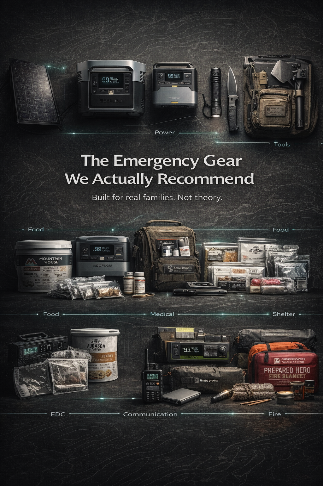
The Emergency Gear We Actually Recommend
A curated list of emergency gear our team actually uses — water filtration, power stations, first aid, communication, and more. Organized by category with direct links.
Practical emergency preparedness guides for real families. No jargon, no fear-mongering — just actionable knowledge.

A curated list of emergency gear our team actually uses — water filtration, power stations, first aid, communication, and more. Organized by category with direct links.

How does NomadCore compare to FEMA, Ready.gov, and Red Cross emergency apps? An honest, feature-by-feature comparison for families who want to be genuinely prepared.

When disasters knock out cell towers and internet, most emergency apps become useless. Here's why offline-first design is the only approach that works when it matters.
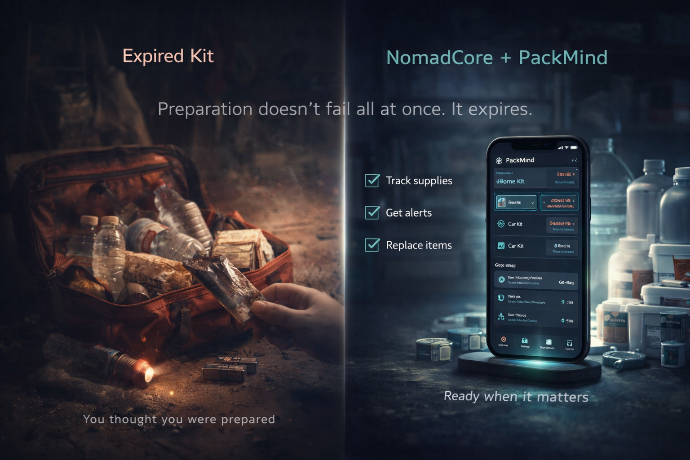
Most emergency kits expire silently. Learn how to track supply expiration dates, rotate stock efficiently, and ensure your kit actually works when you need it.
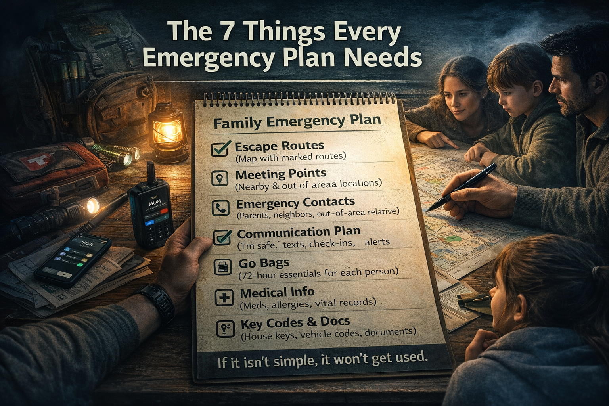
Most emergency plans fail because they're too complicated, buried in a drawer, and never shared. Here's how to build one your family will actually follow.
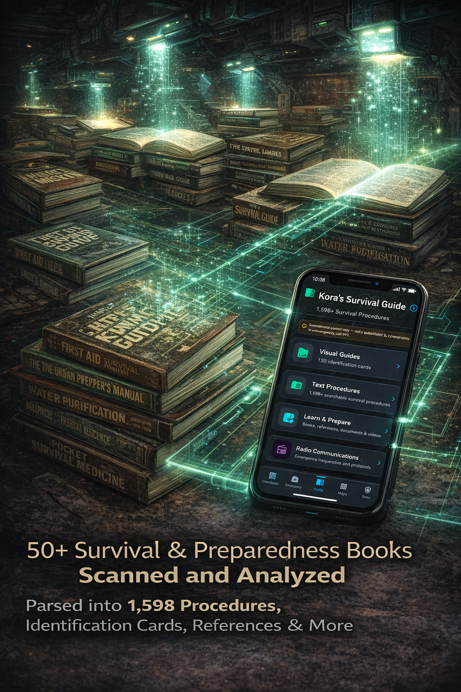
What if you needed to purify water, treat a snake bite, or signal for help — with no cell service? Kora's Guide puts 1,400+ verified procedures in your pocket.

Families who practice emergency drills are twice as likely to evacuate safely. Here's how to run fire, earthquake, and evacuation drills with your family.

After a house fire, the average family spends months reconstructing lost documents. Here's exactly what to digitize and how to store it securely.
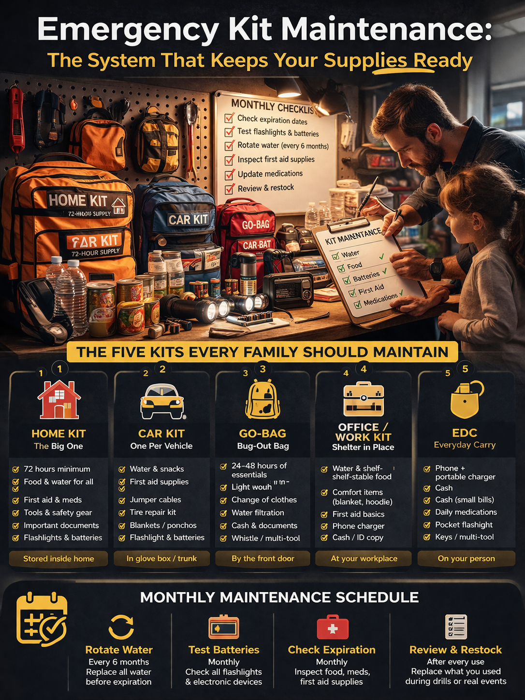
An emergency kit you packed two years ago is probably full of expired supplies. Here's a practical system for organizing and maintaining your emergency supplies.

Most people can't name their nearest emergency shelter. Here's how to map your local emergency resources before disaster strikes.

After every major disaster, neighbors save more lives than first responders in the first 72 hours. Here's how to build a community emergency network.
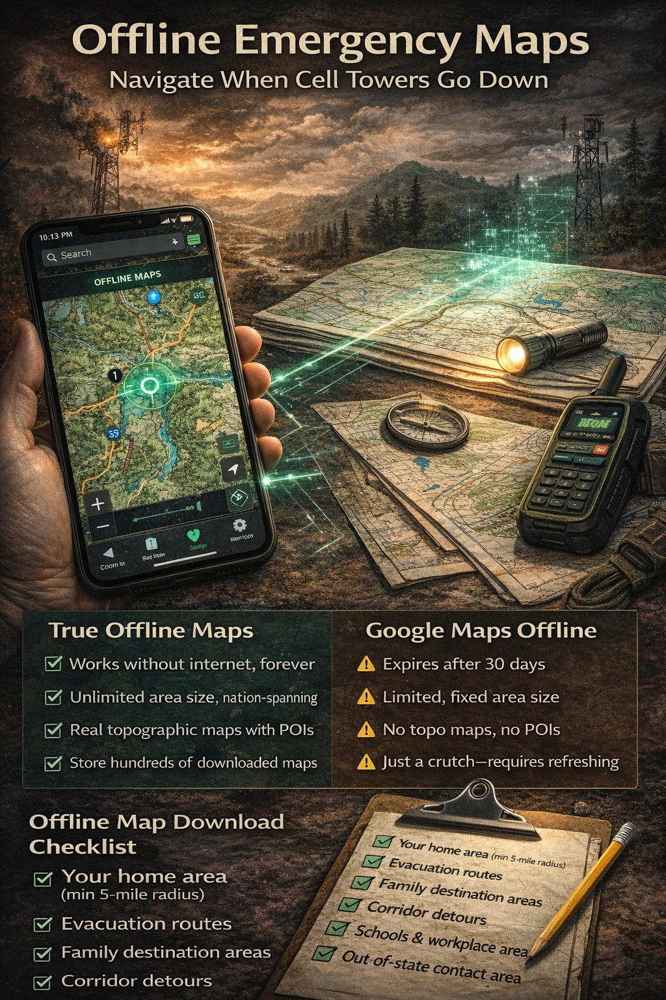
When disasters knock out cell service, Google Maps goes blank. Here's how to download, mark, and use offline maps for evacuation routes and shelter locations.
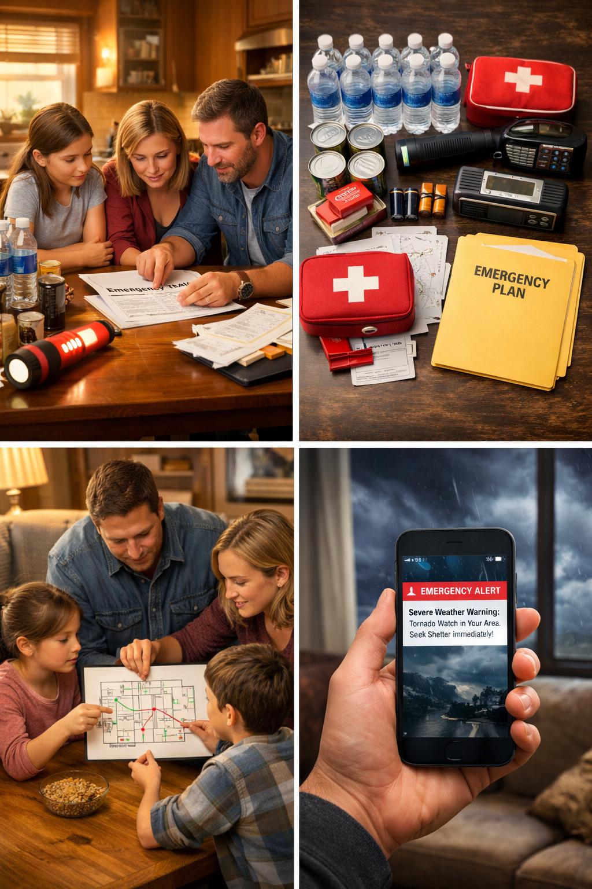
Most families are one disaster away from chaos. Not because they don't care — because life is busy. This guide breaks it down into manageable steps.
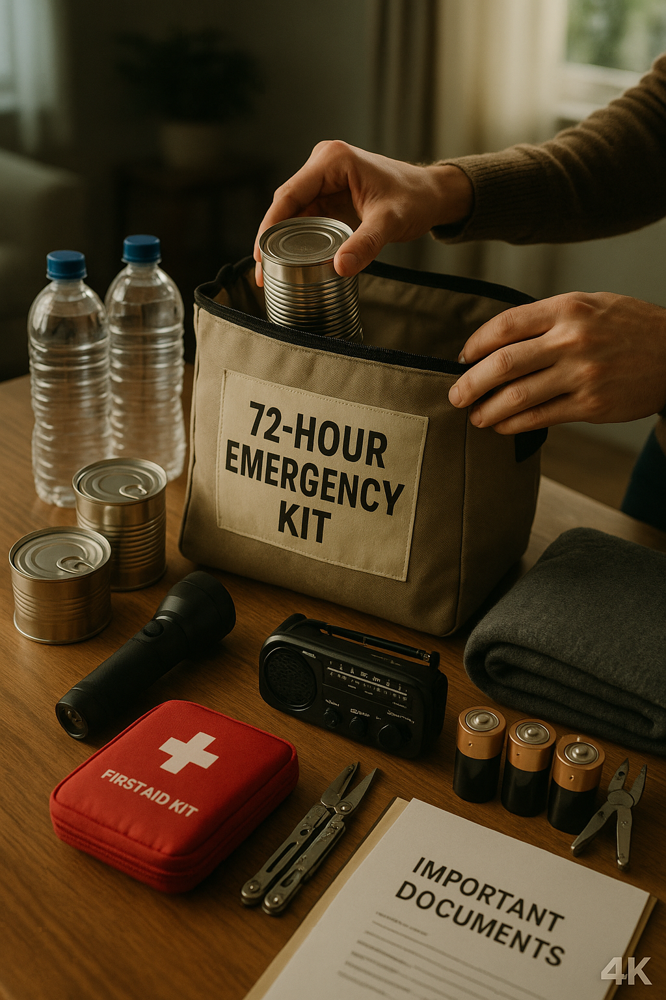
When disaster strikes, you have minutes — not hours — to grab what you need. Here's how to build a kit that actually works.
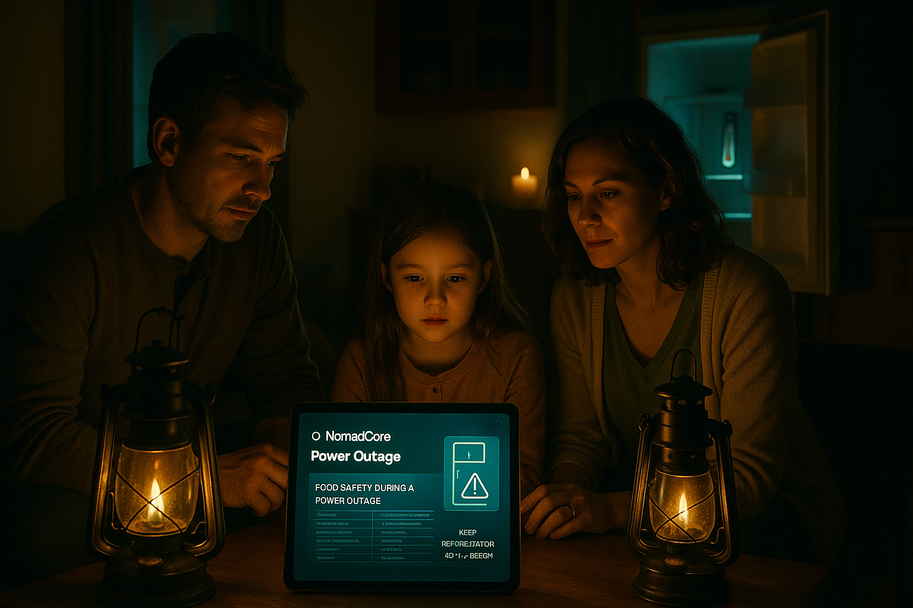
The U.S. experienced over 1,500 major outages in 2024. The difference between inconvenience and crisis comes down to preparation.
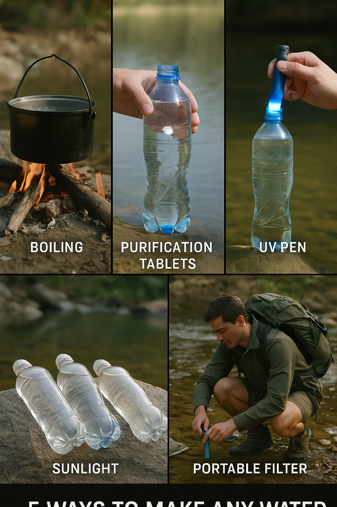
Not all water is safe to drink. Here are five proven methods — each with different strengths and ideal use cases.
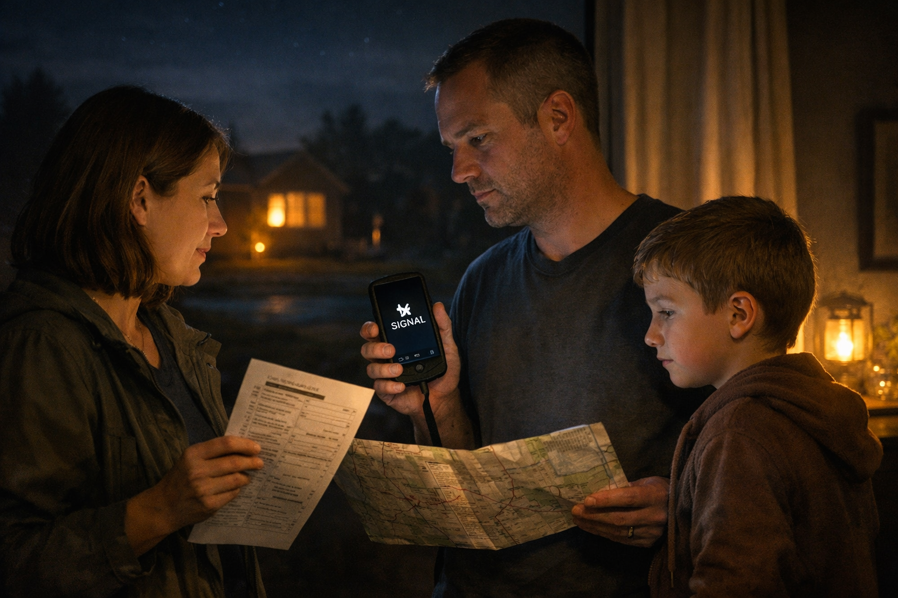
Cell towers jam. Phones die. Networks overload. A communication plan ensures your family stays connected when it matters most.
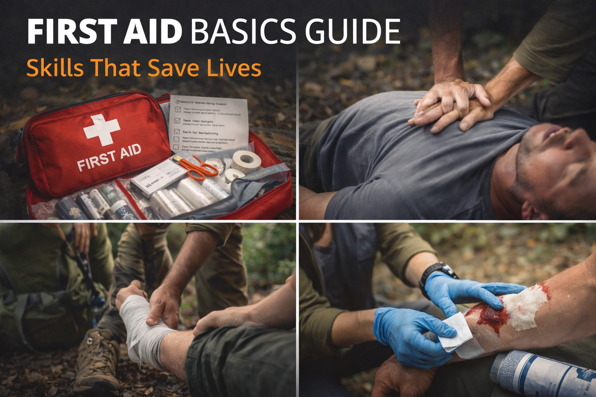
When help is hours away, basic first aid knowledge fills the gap. Here's what to stock, what to do, and what to avoid.
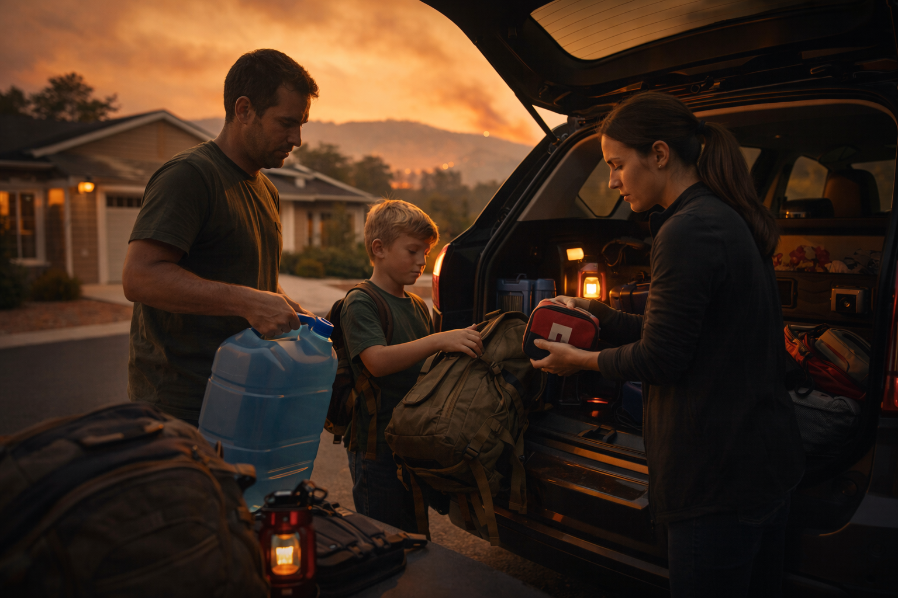
Wildfires can force evacuation in minutes, not hours. This checklist ensures your family can leave safely with everything that matters.
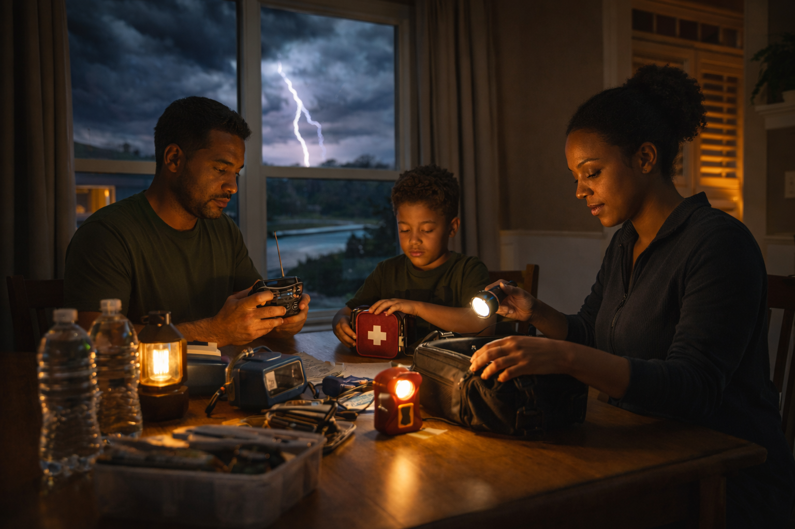
Tornadoes give an average of 13 minutes warning. The difference between safety and disaster comes down to preparation.

After a disaster, proving who you are and what you own becomes urgent. Here's how to organize the documents your family can't afford to lose.

Kids handle emergencies better when they understand the plan. Here's how to talk about preparedness at every age — without creating fear.

When disaster strikes, do you stay or go? The wrong choice can be deadly. Here's a clear framework for making the right call — fast.

The first 15 minutes determine how the rest plays out. Here's a universal action framework that works for any crisis.

FEMA says be ready to handle 72 hours on your own. Most families can't do 24. Here's why the gap exists — and how little it takes to close it.

One communication method isn't enough. A PACE plan gives your family four layers of backup so you're never left with no way to reach each other.
10 quick questions. Personalized readiness score. Action plan included.
Take the quiz